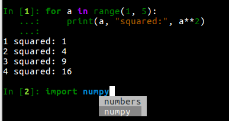

Warning
This documentation covers a development version of IPython. The development version may differ significantly from the latest stable release.
Important
This documentation covers IPython versions 6.0 and higher. Beginning with version 6.0, IPython stopped supporting compatibility with Python versions lower than 3.3 including all versions of Python 2.7.
If you are looking for an IPython version compatible with Python 2.7, please use the IPython 5.x LTS release and refer to its documentation (LTS is the long term support release).
5.x Series¶
IPython 5.7¶
IPython 5.6¶
In Python 3.6 and above, dictionaries preserve the order items were added to them. On these versions, IPython will display dictionaries in their native order, rather than sorting by the keys (PR #10958).
ProgressBarcan now be used as an iterator (PR #10813).The shell object gains a
check_complete()method, to allow a smoother transition to new input processing machinery planned for IPython 7 (PR #11044).IPython should start faster, as it no longer looks for all available pygments styles on startup (PR #10859).
You can see all the PR marked for the 5.6. milestone, and all the backport versions.
IPython 5.5¶
System Wide config¶
IPython now looks for config files in
{sys.prefix}/etc/ipythonfor environment-specific configuration.Startup files can be found in
/etc/ipython/startupor{sys.prefix}/etc/ipython/startupin addition to the profile directory, for system-wide or env-specific startup files.
See PR #10644
ProgressBar¶
IPython now has built-in support for progressbars:
In[1]: from IPython.display import ProgressBar
... : pb = ProgressBar(100)
... : pb
In[2]: pb.progress = 50
# progress bar in cell 1 updates.
See PR #10755
Misc¶
Fix
IPython.core.display:Pretty._repr_pretty_had the wrong signature. (PR #10625)
%timeitnow give a correctSyntaxErrorif nakedreturnused. (PR #10637)Prepare the
:ipython:directive to be compatible with Sphinx 1.7. (PR #10668)Make IPython work with OpenSSL in FIPS mode; change hash algorithm of input from md5 to sha1. (PR #10696)
Clear breakpoints before running any script with debugger. (PR #10699)
Document that
%profileis deprecated, not to be confused with%prun. (PR #10707)Limit default number of returned completions to 500. (PR #10743)
You can see all the PR marked for the 5.5. milestone, and all the backport versions.
IPython 5.4.1¶
Released a few hours after 5.4, fix a crash when
backports.shutil-get-terminal-size is not installed. #10629
IPython 5.4¶
IPython 5.4-LTS is the first release of IPython after the release of the 6.x series which is Python 3 only. It backports most of the new exposed API additions made in IPython 6.0 and 6.1 and avoid having to write conditional logics depending of the version of IPython.
Please upgrade to pip 9 or greater before upgrading IPython. Failing to do so on Python 2 may lead to a broken IPython install.
Configurable TerminalInteractiveShell¶
Backported from the 6.x branch as an exceptional new feature. See PR #10373 and #10364
IPython gained a new c.TerminalIPythonApp.interactive_shell_class option
that allow to customize the class used to start the terminal frontend. This
should allow user to use custom interfaces, like reviving the former readline
interface which is now a separate package not maintained by the core team.
Define _repr_mimebundle_¶
Object can now define _repr_mimebundle_ in place of multiple _repr_*_
methods and return a full mimebundle. This greatly simplify many implementation
and allow to publish custom mimetypes (like geojson, plotly, dataframes….).
See the Custom Display Logic example notebook for more informations.
Execution Heuristics¶
The heuristic for execution in the command line interface is now more biased toward executing for single statement. While in IPython 4.x and before a single line would be executed when enter is pressed, IPython 5.x would insert a new line. For single line statement this is not true anymore and if a single line is valid Python, IPython will execute it regardless of the cursor position. Use Ctrl-O to insert a new line. PR #10489
Implement Display IDs¶
Implement display id and ability to update a given display. This should greatly simplify a lot of code by removing the need for widgets and allow other frontend to implement things like progress-bars. See PR #10048
Display function¶
The display() function is now available by
default in an IPython session, meaning users can call it on any object to see
their rich representation. This should allow for better interactivity both at
the REPL and in notebook environment.
Scripts and library that rely on display and may be run outside of IPython still
need to import the display function using from IPython.display import
display. See PR #10596
Miscs¶
_mp_main_is not reloaded which fixes issues with multiprocessing. PR #10523Use user colorscheme in Pdb as well PR #10479
Faster shutdown. PR #10408
Fix a crash in reverse search. PR #10371
added
Completer.backslash_combining_completionsboolean option to deactivate backslash-tab completion that may conflict with windows path.
IPython 5.3¶
Released on February 24th, 2017. Remarkable changes and fixes:
Fix a bug in
set_next_inputleading to a crash of terminal IPython. PR #10231, #10296, #10229Always wait for editor inputhook for terminal IPython PR #10239, PR #10240
Update terminal colors to be more visible by default on windows PR #10260, PR #10238, #10281
Add Ctrl-Z shortcut (suspend) in terminal debugger PR #10254, #10273
Indent on new line by looking at the text before the cursor PR #10264, PR #10275, #9283
Update QtEventloop integration to fix some matplotlib integration issues PR #10201, PR #10311, #10201
Respect completions display style in terminal debugger PR #10305, PR #10313
Add a config option
TerminalInteractiveShell.extra_open_editor_shortcutsto enable extra shortcuts to open the input in an editor. These are v in vi mode, and C-X C-E in emacs mode (PR #10330). The F2 shortcut is always enabled.
IPython 5.2.2¶
Fix error when starting with
IPCompleter.limit_to__all__configured.
IPython 5.2¶
Released on January 29th, 2017. Remarkable changes and fixes:
restore IPython’s debugger to raise on quit. PR #10009
The configuration value
c.TerminalInteractiveShell.highlighting_stylecan now directly take a class argument for custom color style. PR #9848Correctly handle matplotlib figures dpi PR #9868
Deprecate
-eflag for the%notebookmagic that had no effects. PR #9872You can now press F2 while typing at a terminal prompt to edit the contents in your favourite terminal editor. Set the
EDITORenvironment variable to pick which editor is used. PR #9929sdists will now only be
.tar.gzas per upstream PyPI requirements. PR #9925IPython.core.debuggerhave gained aset_trace()method for convenience. PR #9947The ‘smart command mode’ added to the debugger in 5.0 was removed, as more people preferred the previous behaviour. Therefore, debugger commands such as
cwill act as debugger commands even whencis defined as a variable. PR #10050Fixes OS X event loop issues at startup, PR #10150
Deprecate the
%autoindentmagic. PR #10176Emit a
DeprecationWarningwhen setting the deprecatedlimit_to_alloption of the completer. PR #10198The
%%capturemagic can now capture the result of a cell (from an expression on the last line), as well as printed and displayed output. PR #9851.
Changes of behavior to InteractiveShellEmbed.
InteractiveShellEmbed interactive behavior have changed a bit in between
5.1 and 5.2. By default %kill_embedded magic will prevent further invocation
of the current call location instead of preventing further invocation of
the current instance creation location. For most use case this will not change
much for you, though previous behavior was confusing and less consistent with
previous IPython versions.
You can now deactivate instances by using %kill_embedded --instance flag,
(or -i in short). The %kill_embedded magic also gained a
--yes/-y option which skip confirmation step, and -x/--exit
which also exit the current embedded call without asking for confirmation.
See PR #10207.
IPython 5.1¶
Broken
%timeiton Python2 due to the use of__qualname__. PR #9804Restore
%gui qtto create and return aQApplicationif necessary. PR #9789Don’t set terminal title by default. PR #9801
Preserve indentation when inserting newlines with
Ctrl-O. PR #9770Restore completion in debugger. PR #9785
Deprecate
IPython.core.debugger.Tracer()in favor of simpler, newer, APIs. PR #9731Restore
NoOpContextcontext manager removed by mistake, and addDeprecationWarning. PR #9765Add option allowing
Prompt_toolkitto use 24bits colors. PR #9736Fix for closing interactive matplotlib windows on OS X. PR #9854
An embedded interactive shell instance can be used more than once. PR #9843
More robust check for whether IPython is in a terminal. PR #9833
Better pretty-printing of dicts on PyPy. PR #9827
Some coloured output now looks better on dark background command prompts in Windows. PR #9838
Improved tab completion of paths on Windows . PR #9826
Fix tkinter event loop integration on Python 2 with
futureinstalled. PR #9824Restore
Ctrl-\as a shortcut to quit IPython.Make
get_ipython()accessible when modules are imported by startup files. PR #9818Add support for running directories containing a
__main__.pyfile with theipythoncommand. PR #9813
True Color feature¶
prompt_toolkit uses pygments styles for syntax highlighting. By default, the
colors specified in the style are approximated using a standard 256-color
palette. prompt_toolkit also supports 24bit, a.k.a. “true”, a.k.a. 16-million
color escape sequences which enable compatible terminals to display the exact
colors specified instead of an approximation. This true_color option exposes
that capability in prompt_toolkit to the IPython shell.
Here is a good source for the current state of true color support in various terminal emulators and software projects: https://gist.github.com/XVilka/8346728
IPython 5.0¶
Released July 7, 2016
New terminal interface¶
IPython 5 features a major upgrade to the terminal interface, bringing live syntax highlighting as you type, proper multiline editing and multiline paste, and tab completions that don’t clutter up your history.
{kind=link}
These features are provided by the Python library prompt_toolkit, which replaces
readline throughout our terminal interface.
Relying on this pure-Python, cross platform module also makes it simpler to
install IPython. We have removed dependencies on pyreadline for Windows and
gnureadline for Mac.
Backwards incompatible changes¶
The
%install_extmagic function, deprecated since 4.0, has now been deleted. You can distribute and install extensions as packages on PyPI.Callbacks registered while an event is being handled will now only be called for subsequent events; previously they could be called for the current event. Similarly, callbacks removed while handling an event will always get that event. See #9447 and PR #9453.
Integration with pydb has been removed since pydb development has been stopped since 2012, and pydb is not installable from PyPI.
The
autoedit_syntaxoption has apparently been broken for many years. It has been removed.
New terminal interface¶
The overhaul of the terminal interface will probably cause a range of minor issues for existing users. This is inevitable for such a significant change, and we’ve done our best to minimise these issues. Some changes that we’re aware of, with suggestions on how to handle them:
IPython no longer uses readline configuration (~/.inputrc). We hope that
the functionality you want (e.g. vi input mode) will be available by configuring
IPython directly (see Terminal IPython options).
If something’s missing, please file an issue.
The PromptManager class has been removed, and the prompt machinery simplified.
See Custom Prompts to customise prompts with the new machinery.
IPython.core.debugger now provides a plainer interface.
IPython.terminal.debugger contains the terminal debugger using
prompt_toolkit.
There are new options to configure the colours used in syntax highlighting.
We have tried to integrate them with our classic --colors option and
%colors magic, but there’s a mismatch in possibilities, so some configurations
may produce unexpected results. See Terminal Colors for more information.
The new interface is not compatible with Emacs ‘inferior-shell’ feature. To
continue using this, add the --simple-prompt flag to the command Emacs
runs. This flag disables most IPython features, relying on Emacs to provide
things like tab completion.
Provisional Changes¶
Provisional changes are experimental functionality that may, or may not, make it into a future version of IPython, and which API may change without warnings. Activating these features and using these API are at your own risk, and may have security implication for your system, especially if used with the Jupyter notebook,
When running via the Jupyter notebook interfaces, or other compatible client, you can enable rich documentation experimental functionality:
When the docrepr package is installed setting the boolean flag
InteractiveShell.sphinxify_docstring to True, will process the various
object through sphinx before displaying them (see the docrepr package
documentation for more information.
You need to also enable the IPython pager display rich HTML representation
using the InteractiveShell.enable_html_pager boolean configuration option.
As usual you can set these configuration options globally in your configuration
files, alternatively you can turn them on dynamically using the following
snippet:
ip = get_ipython()
ip.sphinxify_docstring = True
ip.enable_html_pager = True
You can test the effect of various combinations of the above configuration in the Jupyter notebook, with things example like :
import numpy as np
np.histogram?
This is part of an effort to make Documentation in Python richer and provide in the long term if possible dynamic examples that can contain math, images, widgets… As stated above this is nightly experimental feature with a lot of (fun) problem to solve. We would be happy to get your feedback and expertise on it.
Deprecated Features¶
Some deprecated features are listed in this section. Don’t forget to enable
DeprecationWarning as an error if you are using IPython in a Continuous
Integration setup or in your testing in general:
import warnings
warnings.filterwarnings('error', '.*', DeprecationWarning, module='yourmodule.*')
hooks.fix_error_editorseems unused and is pending deprecation.IPython/core/excolors.py:ExceptionColorsis deprecated.IPython.core.InteractiveShell:write()is deprecated; usesys.stdoutinstead.IPython.core.InteractiveShell:write_err()is deprecated; usesys.stderrinstead.The
formatterkeyword argument toInspector.infoinIPython.core.oinspechas no effect.The
global_nskeyword argument of IPython Embed was deprecated, and has no effect. Usemodulekeyword argument instead.
Known Issues:¶
<Esc>Key does not dismiss the completer and does not clear the current buffer. This is an on purpose modification due to current technical limitation. Cf PR #9572. Escape the control character which is used for other shortcut, and there is no practical way to distinguish. Use Ctr-G or Ctrl-C as an alternative.Cannot use
Shift-EnterandCtrl-Enterto submit code in terminal. cf #9587 and #9401. In terminal there is no practical way to distinguish these key sequences from a normal new line return.PageUpandpageDowndo not move through completion menu.Color styles might not adapt to terminal emulator themes. This will need new version of Pygments to be released, and can be mitigated with custom themes.